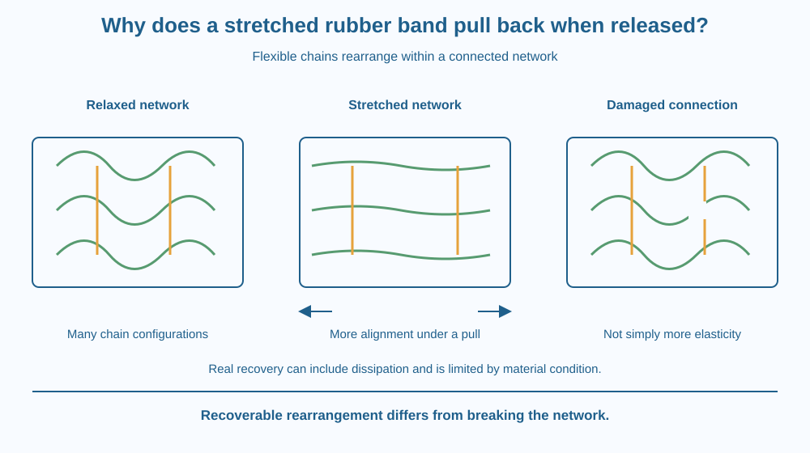

Explain recoverable stretching in a rubber band using flexible molecular chains and a connected network. Distinguish elastic deformation, stored energy and damage. Predict why release can restore shape without assuming that every stretch is perfectly reversible or safe to perform.
A rubber band lengthens under a gentle pull and shortens when the pull is released. The material has not acquired extra rubber to fill the longer shape. It has changed its internal arrangement and geometry.
Why does it return instead of remaining stretched like a piece of softened modelling material? Rubber contains a network of flexible chains whose constrained arrangement changes under tension.
The useful explanation must account for both recoverable movement and the possibility of permanent damage. A band pulled too far does not become an even better example of elasticity.
Rubber contains long polymer chains, molecules made from repeated smaller units. This lesson uses their flexible arrangement to explain mechanical response rather than repeating a broad survey of plastics and environmental effects.
In the relaxed material, chain segments can take many coiled and irregular configurations. The chains are connected into a network through cross-links and other constraints. These connections help prevent the material from simply flowing apart when a load is applied.
During ordinary stretching, much of the extension comes from changes in chain configuration and alignment. It is misleading to imagine every chemical bond stretching to many times its original length like a tiny elastic cord. The network's geometry changes on a larger scale.
The stretched arrangement allows fewer configurations for many chain segments. Thermal motion tends to favour the more numerous disordered configurations when the imposed stretch is reduced. This contributes to rubber's restoring tendency. Real rubber also has energetic interactions and structural complexities, so the chain picture is a useful model rather than a complete material calculation.
Elastic deformation is deformation that is substantially recovered after removing the load within the relevant conditions. The return depends on remaining within the material's useful range and allowing its response to occur. Different rubbers and temperatures can behave differently.
Pulling requires work, and some energy is stored in the deformed system. On release, some can become motion while some is dissipated, for example through internal friction. A real band is not a perfect lossless energy store.
Excessive stretching can damage the network or cause rupture. Ageing, sunlight, chemicals and previous use can also alter its condition. A brittle old band should not be treated as identical to a fresh one just because they look similar at a distance.
The restoring force can depend on extension in a non-simple way. Rubber does not obey one straight-line force rule over all stretches. Without measurement and a specified range, a classroom diagram should not claim a universal force-extension equation for every band.
Draw flexible squiggly chains connected at a few junctions. In a second drawing, spread the junctions apart and let chains become more aligned. Keep the connections present so the model remains a network.
Remove the external pulling arrows and redraw a more compact arrangement. The picture shows recovery of configuration rather than the creation or destruction of polymer material.
Now break a connection in a third drawing. Label it damage rather than greater elasticity. This separates a reversible response from a permanent structural change and explains why simply pulling harder is not a scientifically better test of the original model.
The SVG compares a relaxed network, a stretched network and a damaged example. Squiggly chain paths become straighter and more aligned in the stretched panel, while cross-link nodes remain identifiable.
External arrows show the applied pull, and inward arrows show the restoring tendency after release. A separate energy note states that real recovery can include dissipation. The drawing does not depict every chain or a precise molecular arrangement.
No image invites launching a band or stretching it near a face. The model can be understood entirely on paper without testing the breaking point of a real object.

Rubber bands hold stationery together because they can supply a restoring force over a useful extension range. Seals and flexible components also use elastic materials, although their formulations and working conditions can differ greatly from a household band.
An old band may crack or remain distorted. That observation can indicate changed material condition rather than a failure of the general chain-network explanation. Material history matters to performance.
A school experiment must not assume every band has the same stiffness or safe extension. Different dimensions and compositions affect response. The lesson therefore avoids numerical force claims and uses a paper model as the main activity.
Use paper and a pencil. A real band is unnecessary. If an adult chooses to show a gentle stretch, use an intact band well away from faces and never release it as a projectile.
The drawing models network geometry, not individual bond lengths or measured force. It cannot establish a safe extension for a particular band. Do not test maximum stretch, tie bands around fingers or use them to launch objects.
Why is an unconnected pile of chains a poor model for a band that recovers its shape? Consider what helps maintain the network while segments rearrange.
Now compare two bands with different thicknesses. Why would observing different forces not automatically disprove the molecular explanation? Geometry, formulation and material history can change the macroscopic result while the broad network mechanism remains relevant.
What helps rubber chains form a recoverable network?
Answer: C — Network constraints let chains rearrange without simply flowing apart.
What accounts for much ordinary rubber extension?
Answer: A — Flexible chains can change arrangement while the connected network remains.
An old band cracks under a pull. What is the best interpretation?
Answer: B — Ageing and rupture can alter the network so the original shape is not fully restored.
Make a three-panel explanation for relaxed, stretched and damaged rubber. Preserve chain identities across the first two panels and distinguish a broken connection in the third.
Include energy input during stretching and a limitation on perfect recovery. Your caption must avoid claiming that every polymer bond becomes many times longer or that a band can be stretched indefinitely. No actual breaking experiment should be part of the design.
A material's restoring behaviour can depend strongly on how many molecular arrangements are available, not only on a picture of bonds acting as tiny metal springs. Rubber's flexible network makes the relationship between microscopic configuration and everyday mechanical behaviour especially visible.
Rubber stretches largely by rearranging a connected flexible-chain network; release favours recovery within limits, while excessive strain or ageing can damage the material.